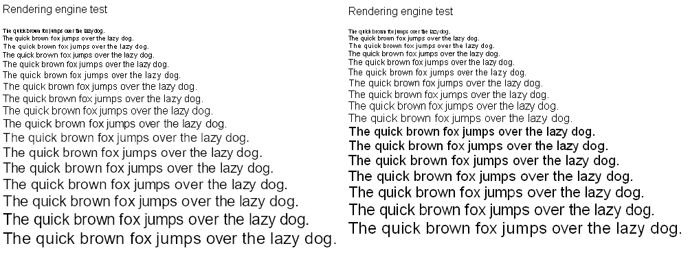

This webpage tests whether the font rendering gamma is correct. This only works if the rendering engine uses anti-aliasing and also should be performed in the pixel-perfect 100% zoom.
Here are the four parts:
a solid color of linear 50% gray with a white background color
a solid color of linear 50% gray with a black background color
a black pattern that gets anti-aliased to 50% gray with a white background color
a white pattern that gets anti-aliased to 50% gray with a black background color
The result should look something like this (minor artifacts between the characters and the shade of gray being slightly off are acceptable, the shade of gray being visually distinct is a FAIL):
Classic GDI passes the test:
In ClearType GDI, there is a gamma setting: cleartypeGDI-gamma.PNG it turns out that out of the six options only the last one passes the test:
Chromium 79.0.3912.0 (Developer Build) (64-bit) on Microsoft Windows always fails whether the system rendering engine is set to classic GDI (top) or ClearType GDI (bottom):
Android Chrome 42.0.2311.111 fails:
In Firefox, it is complicated. In the default settings if the system is set to classic GDI it fails:
and if the system is set to ClearType GDI it also fails:
However, if gfx.font_rendering.cleartype_params.rendering_mode is set to 2 and the system is set to ClearType GDI, it barely passes:
And if gfx.canvas.azure.backends and gfx.content.azure.backends are changed from direct2d1.1,skia,cairo to direct2d1.1,cairo and hardware acceleration is disabled it properly uses GDI (of which the results are mentioned above) but only in older versions. https://support.mozilla.org/en-US/questions/1268750 But wait. Firefox is really confusing actually. When I ran the latest 72.0b11 (32-bit), I noticed that it passed the test:
I did not use any MacType hacks or anything, it passed by itself. But it can't possibly be GDI rendering. When running the rendering engine test with the Microsoft Arial font, I get this result on the left:  Actual GDI rendering on the right. What? Uh? Why is the size 8ppem not anti-aliased, and size 17ppem anti-aliased, when the gasp table in Microsoft Arial doesn't suggest this? (off-by-one error on the recent rendering engine?!) And why the anti-aliased form uses DirectWrite style hinting? (compare with Chrome, which ALWAYS uses the same kind of DirectWrite which fails the gamma test and uses DirectWrite style anti-aliasing and hinting on all sizes)
classic GDI will still remain my favorite text rendering engine